This webpage contains interactive render comparisons between a conventional ray based fiber scattering model and our wave optics fiber scattering mdoel.
Curly elliptical black hair (semi-major axis 19um, semi-minor axis 10um)
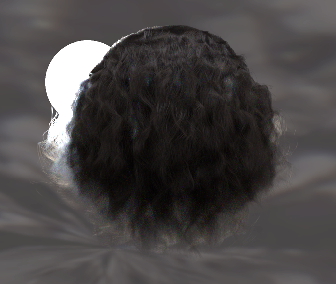
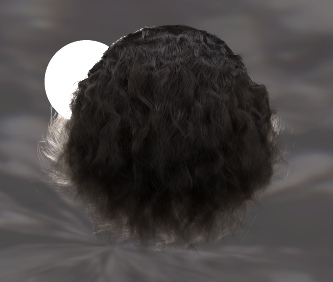
Curlly elliptical red hair (semi-major axis 16um, semi-minor axis 10um)
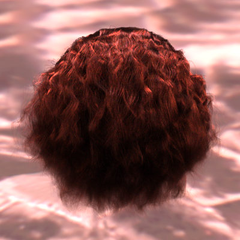
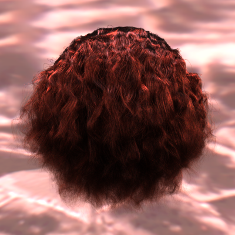
Straight elliptical black hair (semi-major axis 19um, semi-minor axis 10um)
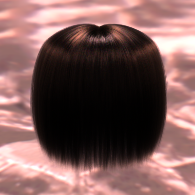
Straight elliptical red hair (semi-major axis 16um, semi-minor axis 10um)
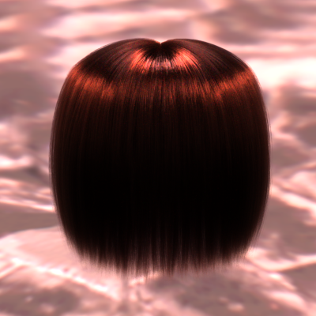

Hamster elliptical fiber(semi-major axis 16um, semi-minor axis 10um)
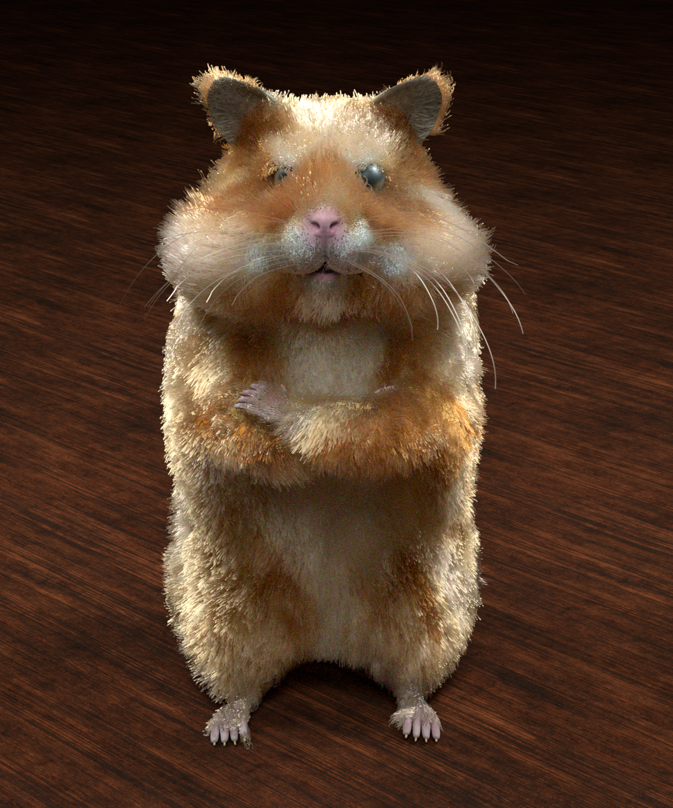
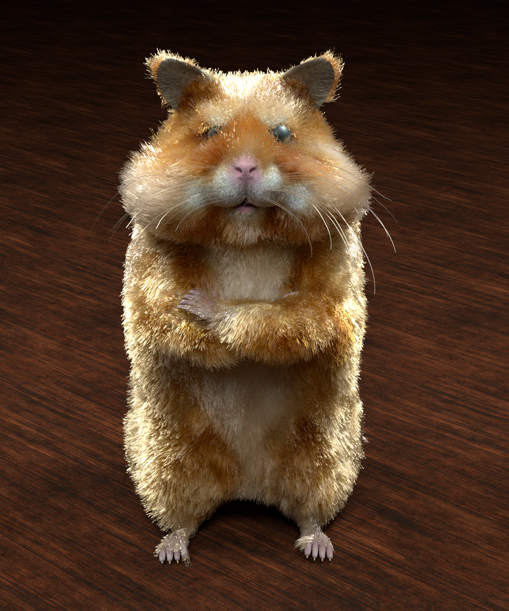
Silk sofa (non-elliptical fibers, radius 5.6um)
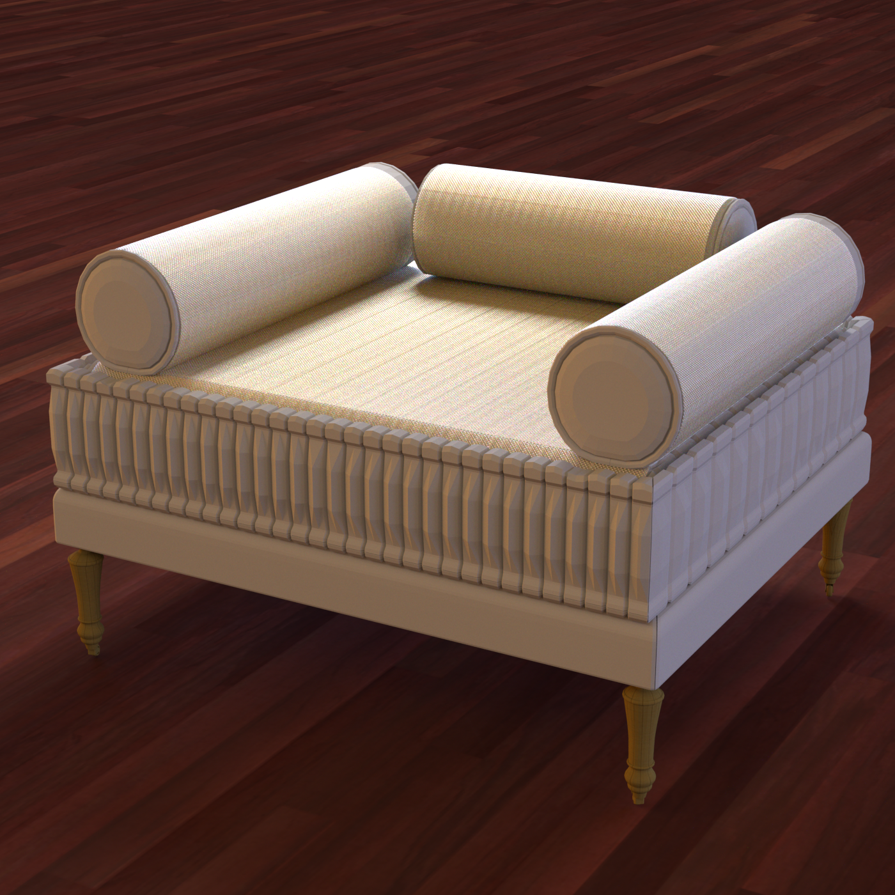
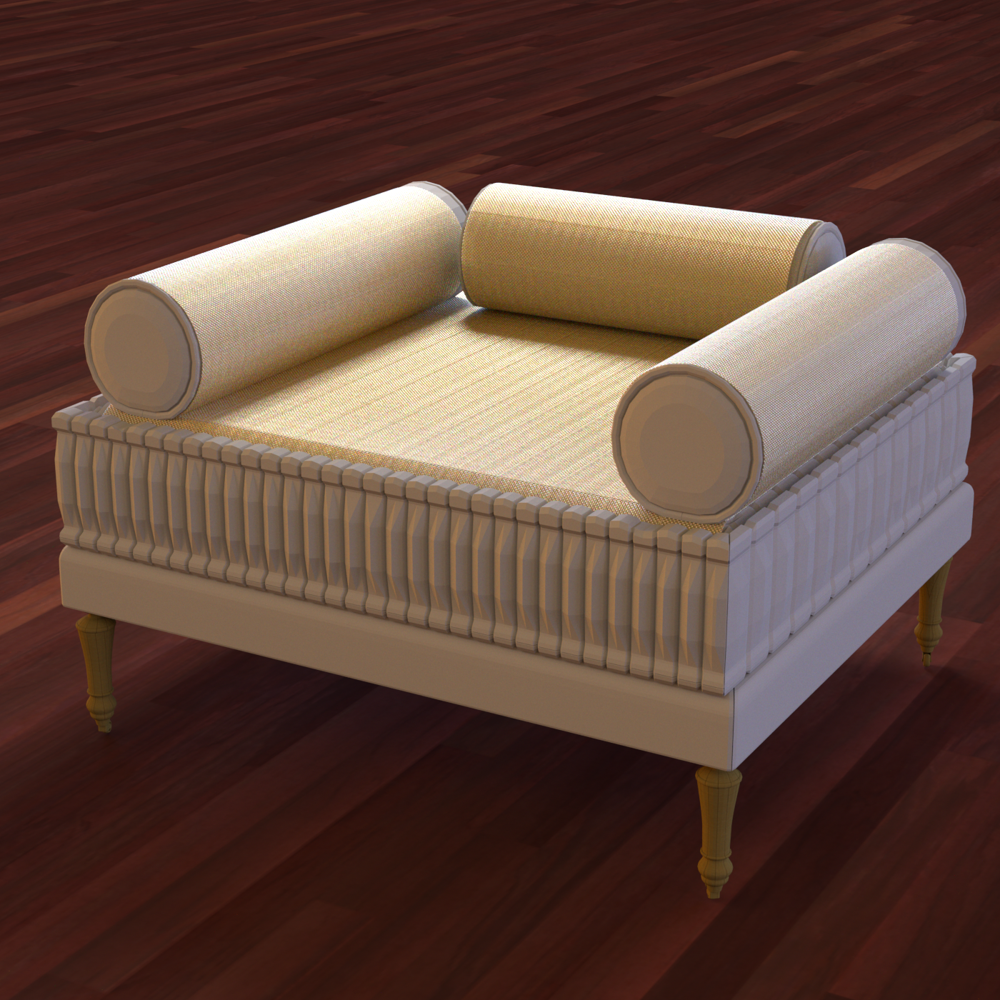
Polyester 1 sofa (non-elliptical fibers, radius 5um)
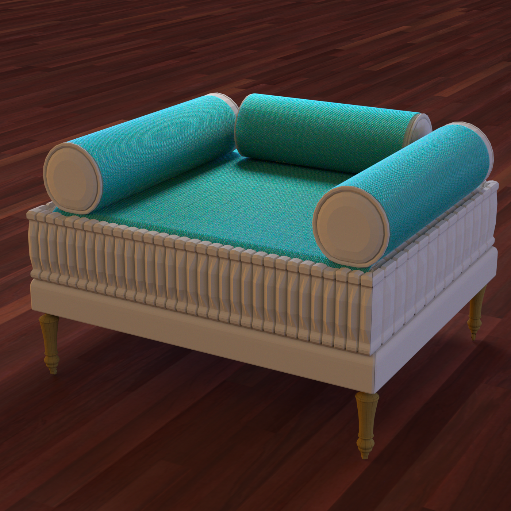
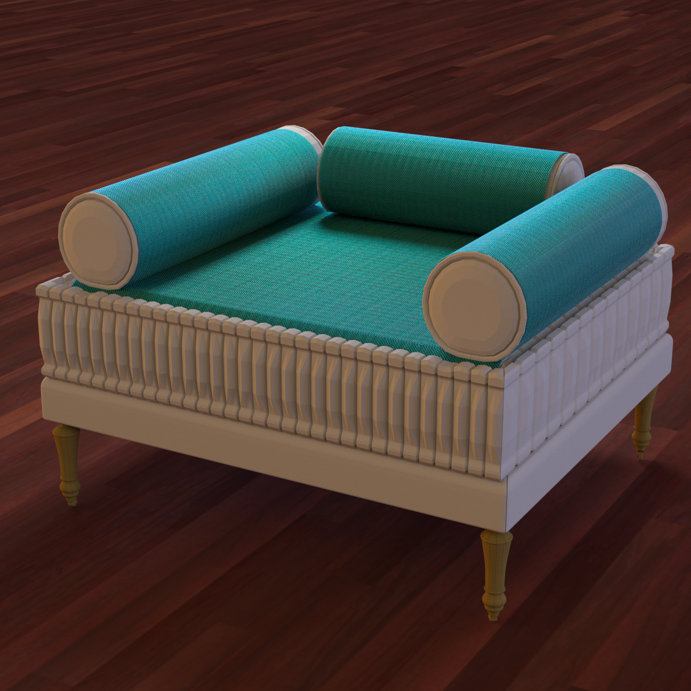
Polyester 2 sofa (non-elliptical fibers, radius 5um)
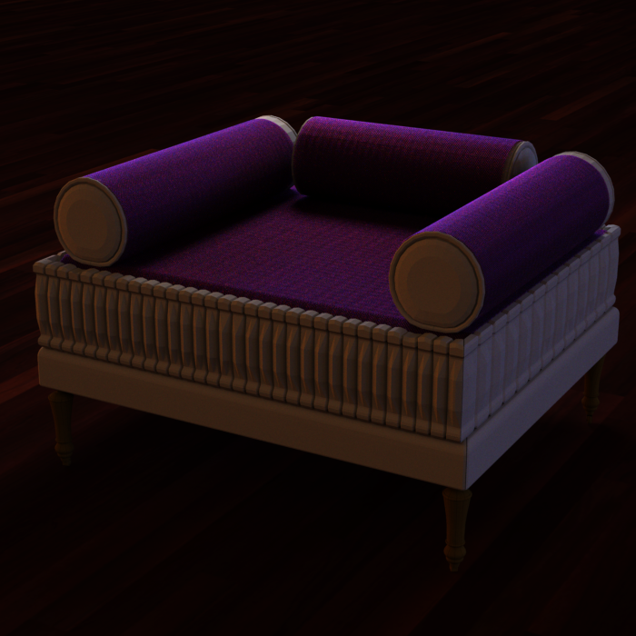
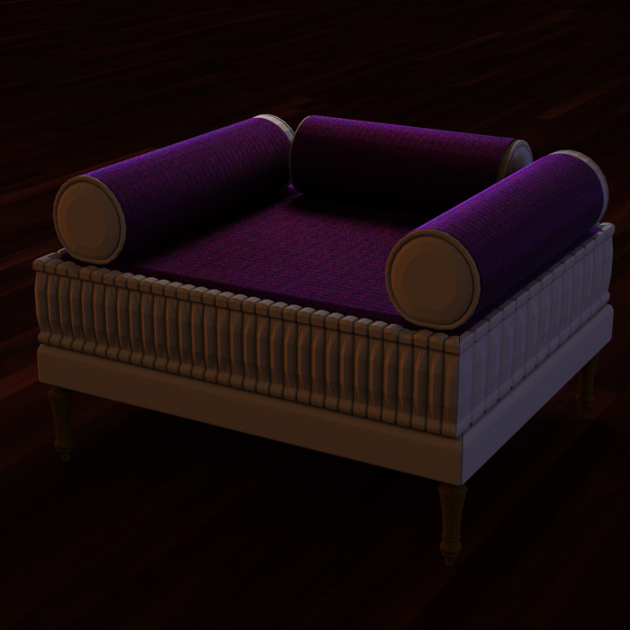
For non-elliptical fibers, we define the radius as the maximum distance between a point on the cross-section contour to the center of the cross-section.